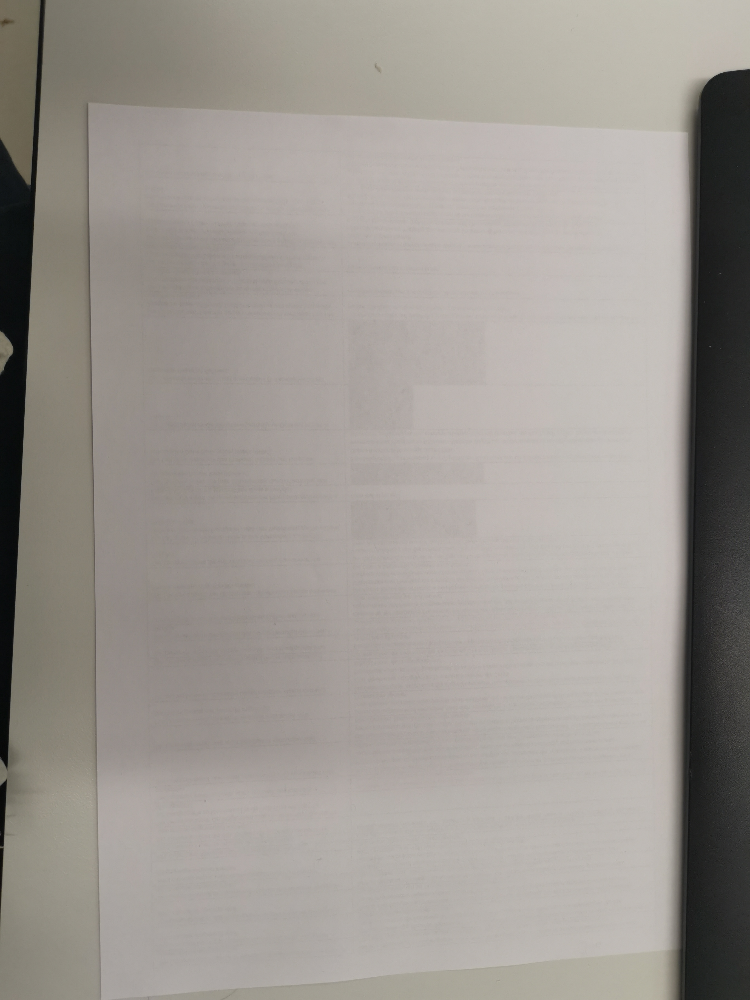
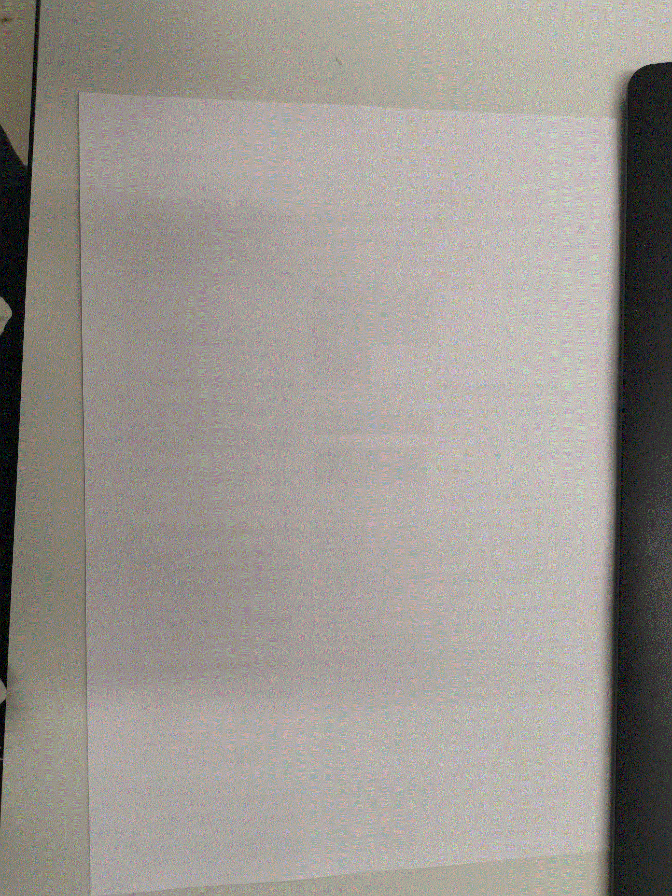

Wie man sieht brauchen Fotos mit wenig Detail weniger Speicherplatz, obwohl sie die gleiche auflösung haben.

jpg, 3'428KB, Eher klein da jpg stark kompromiert

bmp, 57'601, Gross weil bmp für Vektorgrafiken gedachte ist

gif, 7'047KB, Eher klein da gif kompromiert aber nicht so stark wie jpg
jpg, kleine Auflösung, 14KB, Eher klein da jpg stark kompromiert und da die Auflösung klein ist.

jpg, 1'413KB, Eher klein da jpg stark kompromiert

bmp, 29'242, Gross weil bmp für Vektorgrafiken gedachte ist

gif, 3'587KB, Eher klein da gif kompromiert aber nicht so stark wie jpg
jpg, kleine Auflösung, 6KB, Eher klein da jpg stark kompromiert und da die Auflösung klein ist.